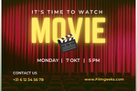
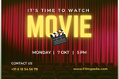

Hi there!
We are the hosts of Filmgeeks, 3 passionate film lovers who want to share their passion for movies and series with the world. What started as endless conversations about the latest movies and our favorite series, grew into this podcast in which we look for the best viewing tips together. Our backgrounds may be different, some are big fans of independent films and arthouse, while others are addicted to blockbusters and bingeworthy series, but our shared love of stories connects us. Together, we bring a wide range of perspectives, from in-depth analyses to light-hearted and humorous discussions. We understand how overwhelming it can be to choose the right movie or series, especially when your mood plays such a big role in it. That's why we started this podcast: to help you in that search, with personal, sincere recommendations that fit how you feel at that moment. Whether you're looking to rediscover an old classic or have a new release on your list, we'll make sure you'll find something that fits your mood. With Filmgeeks, we don't just want to discuss movies and series, but also create a place where movie fans feel at home. Let's celebrate the magic of cinema together, one feeling, one movie, one episode at a time!
What makes us unique?
With Filmgeeks, it's not just about which movie or series is good, but also about when it feels right for you. We want to help you find that perfect match so you don't have to endlessly scroll through your streaming services. Whether you're in the mood for something heartwarming, touching, nerve-wracking, or lighthearted, we'll make sure you always make the right choice. So, what are you waiting for?
Tune in to movie geeks, and let us be your guide into the wonderful world of film and series, tailored to your mood!
 
